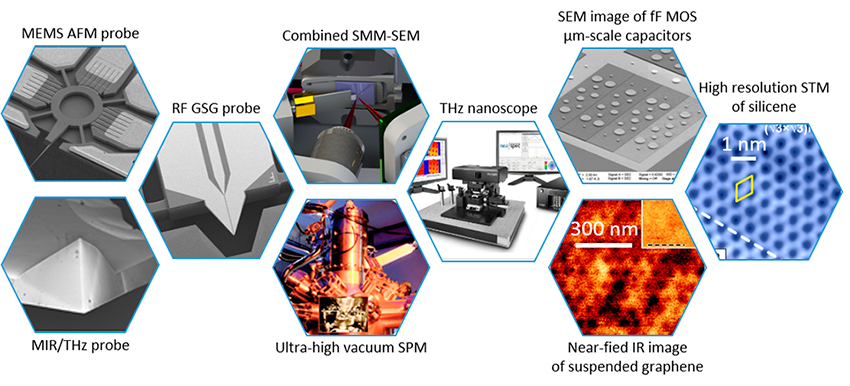

Bienvenue dans l’Ère des Technologies Émergentes
Explorez les innovations qui transforment le monde numérique : IA, Web 3.0, systèmes embarqués, réalité augmentée et bien plus encore.
Technologies Émergentes
Découvrez les nouvelles technologies en plein essor qui révolutionnent les secteurs d’activité et ouvrent la voie à de nouvelles possibilités.

Intelligence Artificielle
1956
L’intelligence artificielle simule l’intelligence humaine. Elle est au cœur de nombreuses innovations : assistants vocaux, voitures autonomes, recommandations, santé, etc.
IA
En savoir plus
Progressive Web Apps
2015
Les PWA combinent le meilleur des applications web et mobiles. Elles fonctionnent hors ligne, sont rapides et offrent une expérience utilisateur fluide.
WEB
En savoir plus
Arduino
2005
Plateforme open source de prototypage électronique. Utilisée dans l’apprentissage, les projets DIY, et l’industrie pour concevoir des systèmes embarqués.
Systeme embarqué
En savoir plus
Electron.js
2013
Cadriciel qui permet de créer des applications desktop avec des technologies web (HTML, CSS, JS). Utilisé pour des apps comme Visual Studio Code, Discord, etc.
Desktop
En savoir plusWeb 3.0 & Blockchain
2015
Le Web devient décentralisé grâce à la blockchain. Il favorise la sécurité, la transparence et l’autonomie numérique des utilisateurs, notamment via les cryptomonnaies, les NFT et les contrats intelligents.
Web
En savoir plusBiotechnologie embarquée
2014
Les systèmes embarqués intègrent des capteurs biométriques avancés pour surveiller le corps humain ou l’environnement. Utilisés en santé, sport, automobile et agriculture connectée.
Systèmes embarqués
En savoir plusTechnologies XR
2016
Ces technologies étendent la réalité en mélangeant virtuel et réel. Très utilisées dans les smartphones, elles transforment le jeu, la formation, la médecine et l’architecture.
Mobile
En savoir plus
Nanotechnologie
2000
À l’échelle atomique, la nanotechnologie permet de créer des composants plus petits, rapides et économes. Elle ouvre la voie à des PC plus puissants et à de nouveaux types de matériaux intelligents.
Desktop
En savoir plusÉvolution des Technologies
Découvrez les grandes étapes de la transformation numérique à travers les décennies. De l’ordinateur personnel à l’intelligence artificielle, chaque période marque une révolution majeure.
Naissance de l’informatique personnelle
L’arrivée des premiers ordinateurs personnels (comme l’Apple II ou l’IBM PC) révolutionne l’accès à la technologie pour les particuliers et les entreprises.
Explosion d'Internet
Le World Wide Web devient public. L'email, les navigateurs comme Netscape et les moteurs de recherche apparaissent, modifiant profondément les communications.
Émergence du mobile et du cloud
Les smartphones apparaissent et le stockage cloud transforme la manière dont les données sont accessibles partout et à tout moment.
Réseaux sociaux et objets connectés
Facebook, Twitter, Instagram explosent, tandis que les objets connectés s’invitent dans nos maisons, nos voitures, et même nos corps (montres, bracelets).
Intelligence Artificielle générative
L’IA devient accessible à tous avec ChatGPT, Midjourney, DALL·E, etc. Automatisation, création de contenus, aide à la décision : l’IA bouleverse tous les domaines.
Technologies quantiques & transhumanisme
Les recherches en informatique quantique, réalité étendue (XR) et interfaces cerveau-machine pourraient redéfinir les limites entre humain et machine.